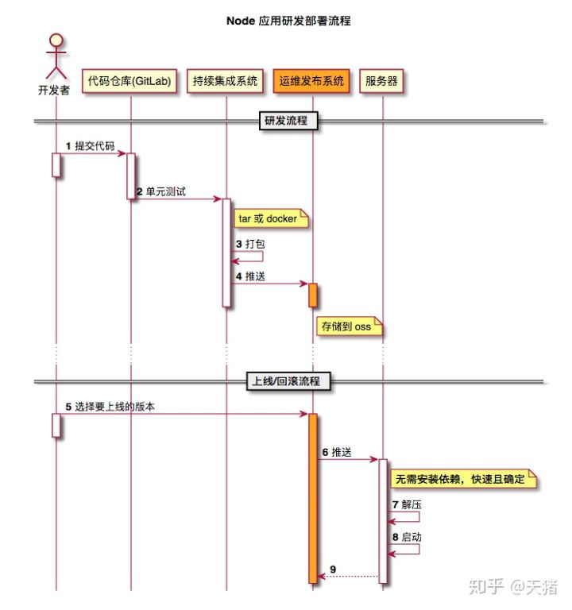
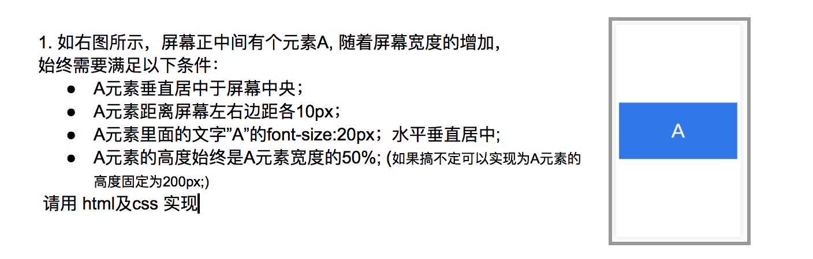
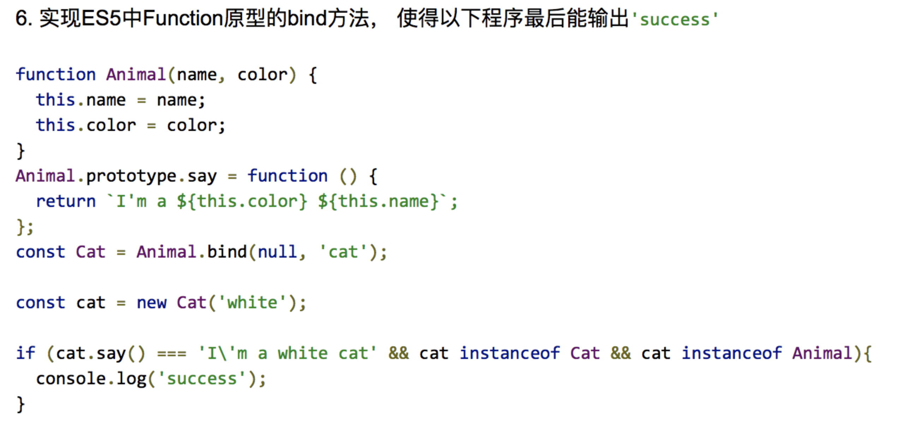

前端常见问题面试题总结
这篇文章会不定期更新一些前端面试题。
CSS
- 选择器优先级
- 你知道哪些新的属性
- 盒模型
- BFC
- 概念
- 如何触发
- 如何应用
- 清除浮动的方法
- 如何实现三列布局
- flex 常见布局
- rem 单位换算
- CSS 渲染过程
- DOCTYPE 的作用
- 垂直居中
- 说一些你知道的 CSS 新特性
JS
- 如何实现继承和封装
- es5 实现 new
- 实现 instanceof 运算符
- 实现 isPrototypeOf 方法
- 实现 eventEmitter
- 手写 Proxy / Object.defineProperty
- 实现双向绑定
- 事件委托
- Event Loop
- async 与 defer 的区别
- 如何封装一个组件（参考 antd）
- 说一些你知道的 JS 新特性
- 你知道哪些设计模式
- 如何便利一棵树并对其优化
- 基本数据类型有哪些
- 说说你遇到过什么难点，怎么解决的
- 怎么实现深拷贝浅拷贝
- 什么是闭包
- 手写一个 Promise
- 什么是事件循环
- Web Component
- this 指向
- jQuery 原理
- websocket 心跳机制
- 说一说你知道的设计模式
- 概述输入一个 url 到网页呈现的过程
- DNS 解析的详细过程
- 概述 http 的缓存控制（http2 与相关缓存控制）
- 简述三次握手
- script 标签的属性有哪些
- script 标签的 defer 和 async 标签的作用与区别
- script intergrity 的作用
- 三大框架解决了传统 JQ 开发的哪些问题
- 前端性能提升，各个方面（server, front）
- http 跨域
- HTTP 报文
- cookie session 的区别
- 从输入 URL 到页面加载全过程
- 前端安全方面， xss，csrf
- 层次遍历一棵二叉树
- 字符串中找出最长最多重复的子串
- 闭包的介绍
- 三次握手和四次挥手详细介绍
- TCP 有哪些手段保证可靠交付
- URL 从输入到页面渲染全流程
- 如何预防中间人攻击
- DNS 解析会出错吗，为什么
- ES6 的 Set 内部实现
- 如何应对流量劫持
- 算法：top-K 问题，分成 top-1,top-2,top-K 三小问
- 跨域
- webpack 的 plugins 和 loaders 的实现原理
- vue 和 react 谈谈区别和选型考虑
- webpack 如何优化编译速度
- 事件循环机制，node 和浏览器的事件循环机制区别
- 单元测试编写有哪些原则
- 一个大型项目如何分配前端开发的工作
- 柯里化通用实现
- two-sum
- typescript 有什么好处
- JWT 优缺点
- 基本数据类型
- nginx 负载均衡配置
- 前端性能优化手段
- 针对 React 的性能优化手段
- 301 302 307 308 401 403
- vue 的 nextTick 实现原理以及应用场景
- 谈谈 XSS 防御，以及 Content-Security-Policy 细节
- mobx-react 原理
- forceUpdate 经历了哪些生命周期，子组件呢?
- React key 场景题：列表使用 index 做 key，删除其中一个后，如何表现？
- 算法：实现 setter(obj, ‘a.b.c’ ,val)
- 常见排序算法
- 跨域
- 不同前端技术栈的项目，如何实现一套通用组件方案？
- es6 新特性有哪些
- vuex, mobx, redux 各自的特点和区别
- react 生命周期
- serviceworker 如何保证离线缓存资源更新
- Vue3 proxy 解决了哪些问题？
- 发布订阅模式和观察者模式的异同
- CI/CD 流程
- Promise 串行
- symbol 应用
- 深拷贝
- dns 解析流程
- git rebase
- git cherypick
- cmd amd 区别
- antd 组件源码
- 现有的系统的优化和重构
- html5 最新规范
- 什么是前后端分离
- html 语义化
- 什么是 mvc
- sass 与 less 对比
- 前端构建环境
- 不同前端构建环境的对比，Grunt 与 Gulp
- 前端性能优化
- 常用状态码
- http 的状态码中，499 是什么？如何出现 499，如何排查跟解决
- 如何遍历一个 dom 树
- new 操作符都做了什么
- 简单实现 call
- 简单实现 apply
- 简单实现 bind
- 讲解一下 HTTPS 的工作原理
- 讲解一下 https 对称加密和非对称加密。
- 简单手写实现 promise
- react fiber
- dns 更新策略
- dns 查找策略
- 项目难点
- 个人发展规划
- webpack 打包编译优化
- webpack 打包文件优化
- react 的 setStte 原理
- react render 原理
- 类数组转数组的方法
- JS 的隐式转换
- DOM api
- 闭包解决循环的问题
- 函数节流
- Map Set Generator
- 浏览器的异步事件与 node.js 的异步事件有什么差别？
- arguments 为什么不是数组？
- redux 中间件，applyMiddleware
- thunk saga 原理
- 什么是 AST
- react 性能优化方法
- JS 常用 polyfill 实现
- require import 区别
- 什么是 WebSocket
- 说说 js 文件摆放顺序
- 说说 window.performance.timing api
- 浏览器阻塞
- js 引擎的工作原理，宏任务和微任务
- 函数的扩展性
- 怎样构建组件最合理科学
- 浏览器缓存策略
- 谈谈你了解的 es6
- js 基本数据结构和复杂数据结构
- js 实现单向双向循环链表，实现查找插入删除操作
- 你是如何理解前端架构的
- 说一说前端持续集成
- 说一说常用设计模式
- 说一说 http2
- nginx 配置
- 说一下前端发布流程
- Vue2.0 怎么实现双向绑定的
- Vue3.0 怎么实现双向绑定的
- Object.defineProperty() 和 proxy 的区别
- 你使用过哪些 Vue/React 全家桶，分别解决了什么问题
- Vue/React 的 diff 算法
- Vue 的 nexttick 实现的原理
对于 Vue/React/Angular 三大框架会使用哪些 api 是次要的，主要是要了解框架解决的问题和实现原理。 - webpack 和其他自动化构建工具（gulp、grunt、rollup）有哪些区别
- loader plugin 的区别，一开始被问到还有点惊讶，不同作用的功能被问到一起。
- tree-shaking 的工作原理
- code splitting 用的是什么插件
- 如何提高 webpack 构件速度的
- 利用 DllPlugin 预编译资源模块
- 使用 Happypack 加速代码构建
- webpack 和其他自动化构建工具（gulp、grunt、rollup）有哪些区别（https://juejin.im/post/5b10c6786fb9a01e7c27761b）
- webpack 的 loader 和 plugin 区别，举几个常用的 loader 和 plugin 并说出作用
- webpack 打包的过程
- webpack 打包之后生成哪些文件
- webpack 打包出来的文件体积过大怎么办
- webpack 热部署的原理
- webpack 打包速度过慢怎么办？
盒模型
margin，border，padding，content。
1 | .box { |
内联元素的 margin-left 和 margin-right 起作用，且会影响水平位置。margin-top 和 margin-bottom 不支持。
padding-left 和 padding-right 会影响水平位置，padding-top 和 padding-bottom 起作用但是不影响垂直距离。
border-left 和 border-right 影响水平位置，border-top 和 border-bottom 不影响垂直位置。
BFC
https://juejin.im/post/5909db2fda2f60005d2093db
概念
BFC(Block formatting context)直译为”块级格式化上下文”。它是一个独立的渲染区域，它规定了内部的 Block-level Box 如何布局，并且与这个区域外部毫不相干。
如何触发
- html 根元素
- float 不为 none
- position 为 absolute 或 fixed
- display: inline-block
- display: table-cell
- display: table-caption
- display: table，table-row，table-row-group，table-header-group，table-footer-group, inline-table
- display: flow-root
- contain: layout，content，或 strict
- display: flex 和 display: inline-flex
- display: grid 和 inline-grid
如何应用
- 自适应两栏布局
- 可以包含浮动元素——清除内部浮动
- 分属于不同的 BFC 时可以阻止 margin 重叠
CSS 渲染过程
解析 DOM-> 解析 CSSOM -> 结合为 Render Tree（忽略掉一些元素，如 display: none）-> layout -> paint -> composite
paint： 绘图通常在称为图层的多个表面上完成。分图层的好处是，一些经常需要重绘的元素（例如 transform）不会影响到其他的元素。
composite: 在此步骤中，浏览器将所有层组合在一起。
- layout -> paint -> compose 改变元素的尺寸时
- paint -> compose 改变元素的颜色时
- compose 例如改变元素的 transform 时
DOCTYPE 的作用
doctype 是一种标准通用标记语言的文档类型声明，目的是告诉标准通用标记语言解析器要使用什么样的文档类型定义（DTD）来解析文档。
DOCTYPE 声明是用来指示 web 浏览器关于页面使用哪个 HTML 版本进行编写的指令。
清除浮动的方法
如何实现三列布局
1. 纯浮动
1 | <div class="container"> |
1 | .left { |
2. overflow
1 | <div class="container"> |
1 | .left { |
3. 负值 margin
1 | <div class="content"> |
1 | .content { |
4. 负值 margin 与 relative
1 | <div class="container"> |
1 | .container { |
5. flex
1 | <div class="container"> |
1 | .container { |
6. table
1 | <div class="container"> |
1 | .container { |
flex 常见布局
1. 内容宽度等分
1 | <div class="container"> |
1 | .container { |
2. 左右布局，一侧定宽，一侧自适应撑满
1 | <div class="container"> |
1 | .container { |
es5 实现 new
1 | function newOperator(ctor) { |
实现 instanceof 运算符
1 | function isInstanceof(ins, cons) { |
实现 isPrototypeOf 方法
1 | function isPrototypeOf(proto, ins) { |
实现 eventEmitter
1 | class EventEmitter { |
实现双向绑定
webpack 与 gulp 区别
webpack 是 module bundle
gulp 是 tast runner
Rollup 是在 Webpack 流行后出现的替代品。Rollup 在用于打包 JavaScript 库时比 Webpack 更加有优势，因为其打包出来的代码更小更快。 但功能不够完善，很多场景都找不到现成的解决方案。
Q1-2: 模块化解决了前端的哪些痛点
命名冲突
文件依赖
代码复用
webpack 的 loader 和 plugin 区别，举几个常用的 loader 和 plugin 并说出作用
loader 用于对模块的源代码进行转换。loader 可以使你在 import 或”加载”模块时预处理文件。因此，loader 类似于其他构建工具中“任务(task)”，并提供了处理前端构建步骤的强大方法。loader 可以将文件从不同的语言（如 TypeScript）转换为 JavaScript，或将内联图像转换为 data URL。loader 甚至允许你直接在 JavaScript 模块中 import CSS 文件！ 因为 webpack 本身只能处理 JavaScript，如果要处理其他类型的文件，就需要使用 loader 进行转换，loader 本身就是一个函数，接受源文件为参数，返回转换的结果。
Plugin 是用来扩展 Webpack 功能的，通过在构建流程里注入钩子实现，它给 Webpack 带来了很大的灵活性。 通过 plugin（插件）webpack 可以实 loader 所不能完成的复杂功能，使用 plugin 丰富的自定义 API 以及生命周期事件，可以控制 webpack 打包流程的每个环节，实现对 webpack 的自定义功能扩展。
webpack 打包的过程
读取文件，分析模块依赖
对模块进行解析执行（深度遍历）
针对不同的模块使用不同的 loader
编译模块，生成抽象语法树（AST）
遍历 AST，输出 JS
说一些你知道的 JS 新特性
https://juejin.im/post/5ca2e1935188254416288eb2
原生 JS
https://juejin.im/user/5c6256596fb9a049bd42c770/posts
面试需要主动引导面试
css:
text-rendering: optimizelegibility;
发布流程

- 发布者将代码提交到代码仓库，此时进行一波单元测试、lint 检查等。通过后合并代码。
- 在持续集成系统进行打包（打包之前也可以做一些 CI 的事情，比如测试和 lint 检查等，为了防止在第一步没有做检查），打包好之后推送到运维发布系统。
- 发布者在运维发布系统选择要上线的包，推送到服务器。也可以进行回滚。
height: -webkit-fill-available;
请完成下图所示布局：
live demo

说出以下代码的打印结果：
live demo
1 | async function(){ |
实现 bind 和 apply 方法：
live demo

实现函数节流 throttle
live demo
实现函数防抖 debounce
live demo
generate 遍历 promise
实现一个支持 Promise 的 generator
live demo
算法
- 和为固定的多个值 https://www.cnblogs.com/iyangyuan/p/3908498.html
- 在有序列表中插入一个节点
- 求单链表倒数第 K 个节点
- 二叉树的深度
- 有一个二叉树，每个节点的值是一个整数。写一个函数，判断这颗树中是否存在从根到叶子节点的一个路径，这个路径上所有节点之和为某一个值。存在返回 1，否则返回 0。
- 给定一个字符串，找出其中最长的无重复子串
- 求无序整数数组的中位数（奇数个数字，中位数只有一个，偶数个数字，中位数等于排在中间的两个数的平均值 比如：[4, 5, 1, 2, 3] -> 3 [7, 9, 4, 5]->6
CSS 解答
选择器优先级
ID 选择器 > 伪类选择器（:hover） > 属性选择器（[type=”text”]） > 类选择器 >伪元素选择器（:before） > 元素选择器（h1）
:not 否定伪类在优先级计算中不会被看作是伪类. 事实上, 在计算选择器数量时还是会把其中的选择器当做普通选择器进行计数.
为目标元素直接添加样式，永远比继承样式的优先级高，无视优先级的遗传规则。
1 | <body id="parent"> |
h1 > #parent:
1 | #parent { |
你知道哪些新的属性
下边的属性不一定是新的，也可能是不太常用的，不为人知的。
- currentColor
currentColor 引用当前元素的颜色值（包括继承的颜色值）。
1 | <div class="container"> |
1 | .container { |
- css variable
- fill-available